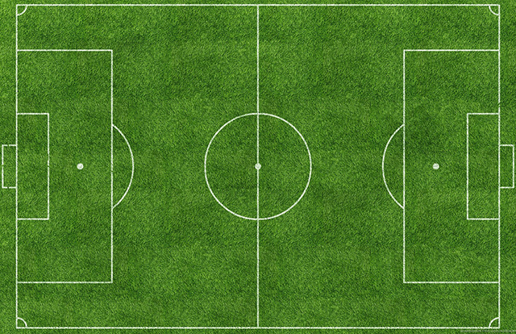
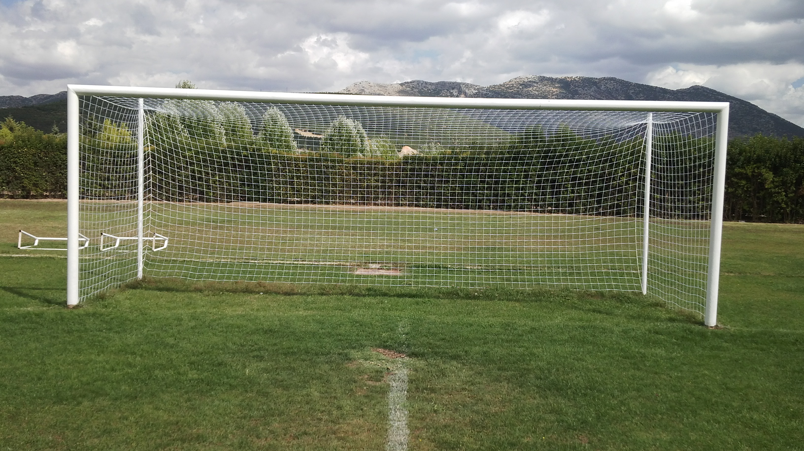

Football Field Dimensions:
According to UEFA standards, a certain range has been defined
instead of a certain measure for the area where football is played.
Accordingly, the length of the football field is 90-120 meters in
length and the football field is considered to be 45-90
meters in width.


In practice, there are small differences
between many football fields, the international standard is
105 m x 68 m. Considering the aforementioned measures, the football
field area is 7140 square meters.
Football Goal Dimensions:
Football goal dimensions are based on 7,32 meters width
and 2,44 meters height.
Penalty Box Dimensions:
The penalty box where the goalkeeper can take the ball with his hand
and the 9 defective foul moves made to the opponent is penalized
with a penalty, starts 16.5 meters indoors from the end point of the
opposing field and it is 40.3 meters long. The size of the penalty
area is 40.3 * 16.5 meters.
The center of the half circle outside the penalty area is the
penalty spot at a distance of 9.5 meters. In other words,
as a result of a foul made on the line in the penalty area when
entering the penalty area, the players must be placed along the
penalty spot.
Goal Pitch Dimensions:
The small rectangular area surrounding the castle is called
the goal pitch. The width of the goal pitch is 5,5 meters.
In the area in question, the distance between the bound line
and the goal poles is 5.5 meters. In this case the size of
the goal pitch is 5.5 * 22 meters.
The Center Circle's Dimensions:
The center round consists of a circle with a radius of 9.15
meters.The width of the lines that determine the football
field should not exceed 12 centimeters.These standard sizes
are not applied in special areas such as carpet areas.